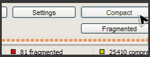

ULTRADEFRAG
An Open Source Defragmenter

")

ULTRA DEFRAG
DOCUMENTATION
- HANDBOOK
- DEVELOPMENT
- TRANSLATIONS
- WIKIPEDIA ARTICLE ON DEFRAGMENTATION
- WIKIPEDIA ARTICLE ON ULTRADEFRAG
QUICK LINKS
- ART GALLERY
- ULTRADEFRAG WEB LOGOS
- PERSONAL PAGE OF DMITRI
- PERSONAL BLOG OF JUSTIN
- PERSONAL PAGE OF SAYEM
The term UltraDefrag is a shorthand for the Ultra Defragmenter and holds no connection with potential owners of registered trademarks or other rights. All trademarks, brands, and names are the property of their respective owners.


Download | Feature List | Screenshots | Give Us Feedback |
Latest News - UltraDefrag 4.0 has been finally released!
The new release is dramatically more reliable. We have done the following to reach this target:
- A lot of extremely important bugs were fixed.
- The strongest error handling was added to all program modules.
- Kernel mode driver was removed as a component less reliable by definition.
- Documentation was rewritten completely to be much clearer.
- Website was cleaned up to get better navigation and faster access to all important information.
Here is a full list of changes.
UltraDefrag is a powerful disk defragmentation tool for Windows. It is the first open source defragmenter with full support of system locked files defragmentation. Actually all files including registry hives and paging file can be processed by UltraDefrag during the Windows boot process.
Also one of the primary goals of the UltraDefrag design is doing the job as fast as possible.
UltraDefrag is fully compatible with Windows NT 4.0, Windows 2000, Windows XP, Windows Server 2003, Windows Vista, Windows Server 2008, Windows 7 and all of the 64-bit editions of Windows.
Some UltraDefrag highlights (the complete list of features is here):
 Boot Time Defragmentation :
Boot Time Defragmentation :
This feature provides an ability to defragment any system files. Including page file, registry hives, hiberfil.sys file and many other files locked by the system or other applications when windows is fully running.
 Computer Shut Down after a job has completed :
Computer Shut Down after a job has completed :
We all know how long a defragment or a compact job can take. All of us most of the time leave the PC unattended while it does its job. With this option you can set UD to shutdown the PC after a job has been completed. This saves electricity and avoids many hazards.
- Fast Disk Optimization:
The optimizer rearranges all data and places them to the beginning of the drive. In many instances we have found that the system is more stable and performs a lot better under load if data is placed at the beginning of the drive.
 Single File and Folder Defragmentation :
Single File and Folder Defragmentation :
After UltraDefrag installation you have the ability to select any file or folder and deframent them. This option is mostly useful if you have recently installed an application or a game and would like to have them defragmented immediately for maximum performance.
 Extended and Customizable G.U.I :
Extended and Customizable G.U.I :
UltraDefrag allows you to customize its graphical user interface such as Font and its sizes. It adapts to the windows theme you are using. Unlike Vista and other versions of Windows Defrag, UD shows a graphical representation of the hard drive like it did on older generation Windows.
 Defragment Scheduler :
Defragment Scheduler :
Select precise times when you want UltraDefrag to run using the scheduler and perform defragmentation tasks.
Translate UltraDefrag to your native language!

You may participate in UltraDefrag translation by submitting a new translation or modifying an existing one. Visit UltraDefrag.WikiSpaces.com for details.
You are welcome! Your help will be very appreciated!
DOWNLOAD ULTRADEFRAG

For all 32 bit Operating Systems - Windows NT4.0/2000/2003/XP/Vista/Server2008/Windows Seven

For all 64 bit Operating Systems - x64 editions of Windows NT4.0/2000/2003/XP/Vista/Server2008/Windows Seven

For 64 bit OS running on Intel Itanium processor.